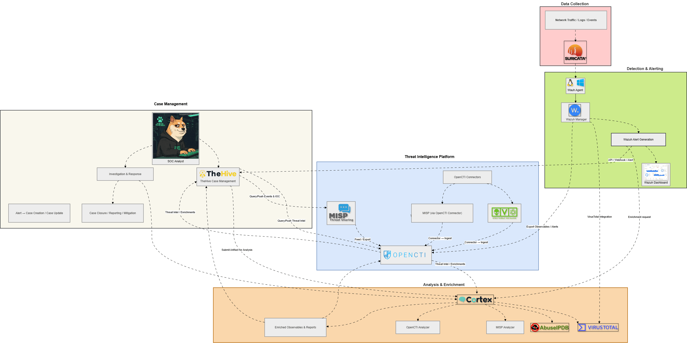
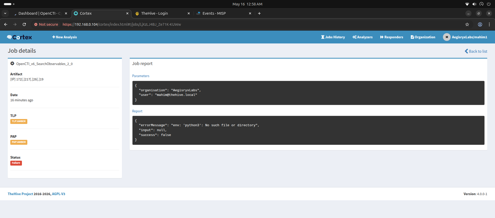
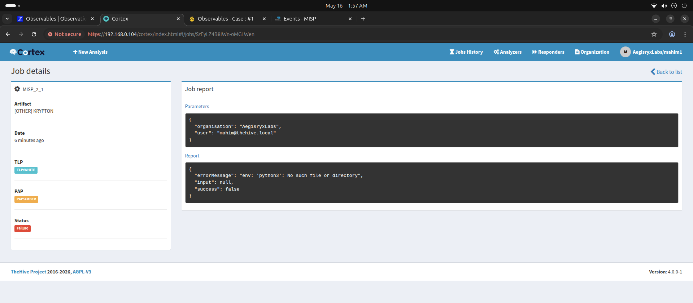
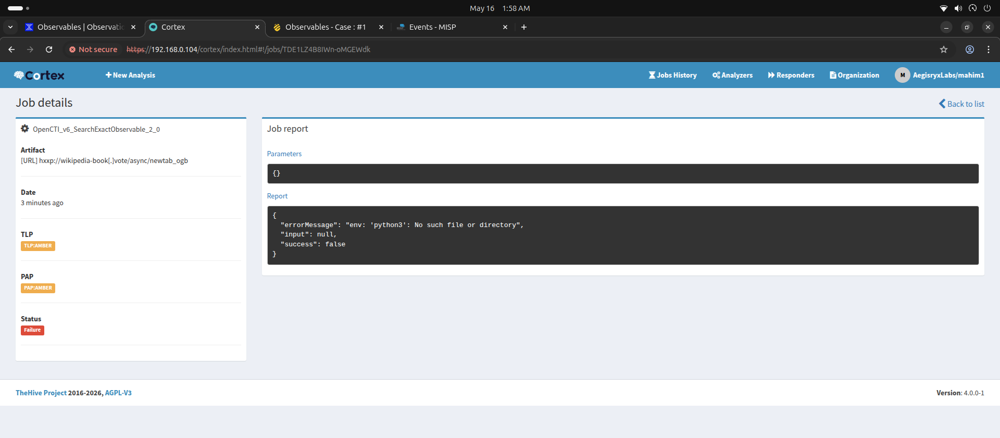
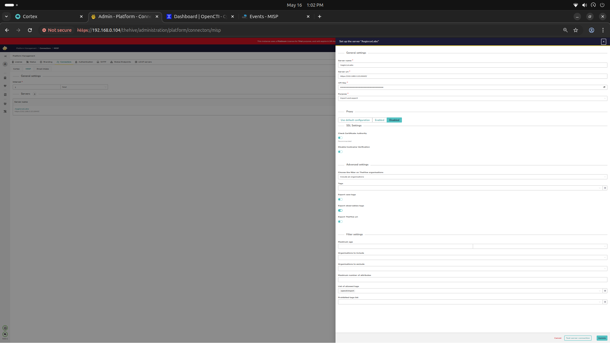
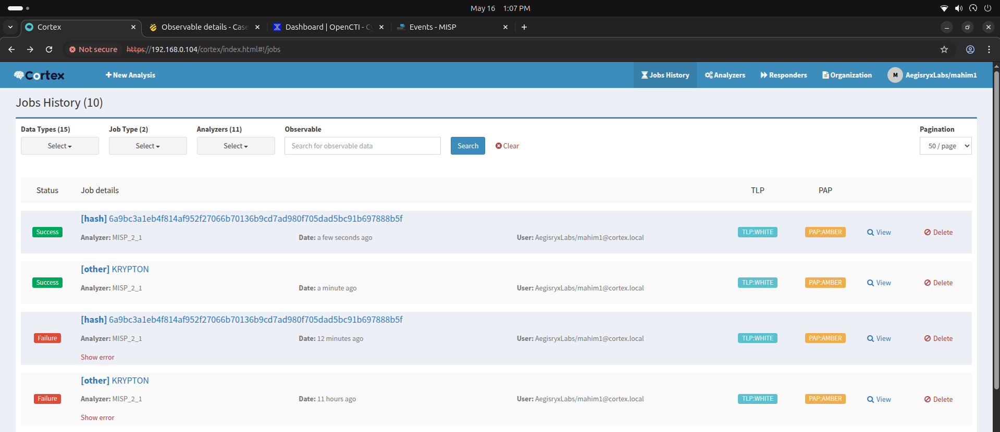

1. Architecture Overview
The goal was to build a fully integrated, open-source SOC/SOAR pipeline capable of handling complex threat detection, automated enrichment, and incident management.

Detection
Suricata IDS for network-level threat detection.
Correlation & Alerting
Wazuh SIEM for endpoint security and log correlation.
Incident Management
TheHive for case management and orchestration.
Automated Enrichment
Cortex + multiple analyzers (VirusTotal, AbuseIPDB).
Threat Intelligence
OpenCTI + MISP + external feeds for comprehensive CTI.
2. Field Errors & Troubleshooting
Error: python3: No such file or directory
Every time an OpenCTI or MISP analyzer was run from the Cortex UI, it failed immediately. This affected all locally deployed analyzers.


Root Cause
Cortex 4.0.0 supports multiple job runner modes. The application.conf had no job.runner configuration, so Cortex defaulted to the process runner, attempting to execute python3 directly inside the Cortex JVM container where Python is not installed.
Add job runner configuration to application.conf to instruct Cortex to use Docker.
Analyzers Fail to Run via Docker
Even after adding job.runner, analyzers still failed because Cortex did not know which Docker image to use for each analyzer. The logs showed: worker xxx can't be run with docker (doesn't have image).

Root Cause
The analyzer JSON definition files lacked the dockerImage field. Cortex Docker runner requires this field to instantiate the correct container per job.
1. Build Docker images for the analyzers (e.g., OpenCTI).
2. Add the dockerImage field to all JSON configs.
Cortex Uses Stale Configurations
After updating the JSON files on disk, analyzers still failed with the same error. Cortex relies on an internal cache in Elasticsearch.
Root Cause
Cortex 4.0.0 stores analyzer worker configurations in Elasticsearch when an analyzer is first enabled. Subsequent restarts read from this cached DB record, not from the updated JSON files on disk.
Force Re-read from Disk: Disable and re-enable the analyzer in the Cortex UI. This deletes the stale Elasticsearch record and creates a fresh one.

MISP Analyzer SSL Certificate Verification Failure
MISP analyzer jobs failed with: certificate verify failed: self-signed certificate.
Root Cause
MISP was deployed using a self-signed certificate. The analyzer Docker container failed to verify this certificate against known CAs. The mispclient.py script didn't correctly handle the cert_check = false parameter passed from Cortex.
Force SSL verification off in mispclient.py and rebuild the image.
3. Proof of Concept
Watch the complete Unified Cyber Defense SOAR Stack in action below. This demonstration showcases the automated detection, correlation, and response capabilities of the integrated platform.
4. Final Integration Success
After resolving the configuration, caching, and SSL issues, the entire SOAR pipeline operated seamlessly. Cortex successfully executed Docker-based analyzers to enrich threat intelligence data from MISP and OpenCTI.
